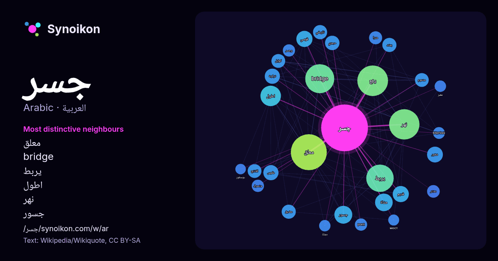

العربية · قائمة كلمات اليوم
جسر
“bridge” · الكلمات الموجودة حولها في 1589 ورودًا من ويكيبيديا, Wikiquote.

الجيران الأكثر تميّزًا
- معلق 118×
- bridge 83×
- يربط 62×
- اطول 29×
- نهر 29×
- جسور 28×
- قوسي 27×
- شغور 25×
- مقوس 24×
- يقع 23×
- مشاة 21×
- كوابل 20×
- مدعوم 18×
- مضيق 17×
- حجري 17×
- دختر 17×
- افتتح 16×
- يمتد 16×
- pont 16×
- وجسر 16×
× = كم مرة أكثر مما في نصوص ويكيبيديا العامة.
الجيران الأكثر تكرارًا
- معلق 129
- يقع 94
- نهر 92
- bridge 84
- يربط 75
- مدينة 67
- فوق 65
- اطول 42
- طريق 40
- عالم 38
- عبر 36
- جسور 32
- معروف 32
- مشاة 31
- بناء 28
- اسم 26
- قديم 26
- قوسي 26
- ملك 26
- منطقة 26
في السياق
- الجسر (الجمع: جسور) أو القنطرة (ج القناطر) هو مُنشأ يُستخدم للعبور من مكان إلى آخر بينهما عائق. قد يكون هذا العائق مائياً أو أرضاً وعرة أو منطقة شديدة Wikipedia snippets · جسر
- جسر البوسفور، والمعروف رسميًا باسم جسر شهداء 15 يوليو، وغير رسمي باسم الجسر الأول، أحد الجسور المعلقة الثلاثة الممتدة على مضيق البوسفور في إسطنبول، تركيا، Wikipedia snippets · جسر البوسفور
- يُعد جسر روبرت ف. كينيدي (الإنجليزية: Robert F. Kennedy Bridge) (المعروف اختصارًا بـ جسر آر إف كيه، وكان يُعرف قبل عام 2008 باسم جسر ترايبورو (الإنجليزية: Wikipedia snippets · جسر روبرت إف كينيدي
- جسر الشغور، هي مدينة تقع في محافظة إدلب شمال شرق سوريا. يعود اسمها في العصور القديمة إلى "سلوكوبلوس" (باليونانية: Σελευκόβηλος)، وهي مدينة غنية بالتاريخ Wikipedia snippets · جسر الشغور
- جسر دلال أو الجسر العباسي هو جسر حجري قديم مبني فوق نهر الخابور في قضاء زاخو، في محافظة دهوك شمال العراق. يبلغ طول الجسر حوالي 115 متراً، وارتفاعه 16 متراً Wikipedia snippets · جسر دلال
- جسر كوسيوسكو (باللغة الإنجليزية:Kosciuszko Bridge) هو جسر معلق بالكابلات فوق نيوتاون كريك في مدينة نيويورك، ويربط غرينبوينت في بروكلين بماسبيث في كوينز Wikipedia snippets · جسر كوسيوسكو
- جسر الصرّافيّة جسر يقع على نهر دجلة في بغداد سمي شعبياً الجسر الحديدي، وسماه من يعيش بقربهِ جسر العلوازية أو جسر العيواضية أو جسر الصرافية والاسم الأخير Wikipedia snippets · جسر الصرافية
- جسر الشيخ حسين أو معبر نهر الأردن (بالعبرية: מעבר נהר הירדן)، هو أحد المعبرين الواقعين على حدود الأردن وفلسطين. يقع الجسر بين إربد في الأردن ومدينة بيسان Wikipedia snippets · جسر الشيخ حسين
كلمات أخرى
- أغنية
- إله
- تاريخ
- جبل
- جرس
- جزيرة
- حديقة
- حصان
- حقيقة
- حياة
- خبز
- خريطة
- خريف
- ذهب
- زمن
- ساعة
- شاي
- شتاء
- صحة
- صحراء
- صمت
- صيف
- طبيعة
- طريق
- طعام
- ظل
- عائلة
- عاصفة
- عسل
- علم
- عمل
- غابة
- فن
- قطار
- قطة
- قلب
- قوة
- كلب
- لغة
- ماء
- مال
- مدينة
- مرآة
- مطر
- ملح
- مناخ
- موت
- نجم
- والدة
حُسبت مسبقًا في 2026-10-09 بالإعدادات الافتراضية (±5 كلمات، مدوّنة متوسطة). يمكن للخريطة التفاعلية تحديثها ببيانات حية.
واجهة مترجمة آليًا؛ نرحب بالتصحيحات.